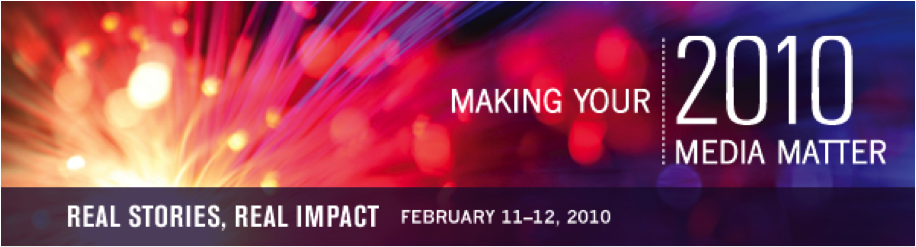

These are events that have already taken place. For a list of upcoming events, click here.
AAAI Conference on Weblogs and Social Media
When:
May 23, 2010 - May 26, 2010
Where:
Washington DC The International Conference on Weblogs and Social Media is a unique venue that brings together researchers from the disciplines of NLP, Social Psychology, Data Mining, Sociology and Visualization to increase our understanding of social media in all its incarnations. Research that blends social science and technology is especially encouraged.
Megapolis Audio Festival
When:
May 14, 2010 - May 16, 2010
Where:
Baltimore, MD
Website:
http://megapolisfestival.org/ The Megapolis Festival is an annual, weekend-long celebration of the craft of DIY audio creation. Artists, documentarians, musicians, and fans come together to share secrets on producing and presenting challenging audio works online, on-air, and on the stage.
Grassroots & Groundwork: Seizing Opportunities to Reduce Poverty and Build Sustainable Prosperity
When:
May 13, 2010 - May 14, 2010
Where:
Portland, OR This conference is about shining a light on practical strategies and tools working – right now – to reduce poverty and build sustainable prosperity.
Grassroots & Groundwork touches on a wide range of solutions in a variety of venues:
* Smaller, more intimate 70-minute break-out sessions that showcase proven, innovative poverty-reduction models and tools
* Unique Q&A session with distinguished activist Marian Wright Edelman, founder of Children’s Defense Fund
* Keynote address by Paul Saginaw, nationally recognized advocate for socially responsible business
* Site visits to successful and unique Portland poverty-reduction projects, sponsored by the Portland Economic Opportunity Initiative – These are filling up fast, so don’t miss out!
* Half-day hands-on interactive workshops as part of the Community-Builder Institute.
You’ll have a chance to network throughout the conference. We’re even hosting a special networking reception for all conferees on Thursday night.
Don’t miss this opportunity to share, learn and connect!
Sign up for e-mail updates and check this site often! Conference details updated regularly.
Making Your Media Matter
When:
May 12, 2010
Where:
Washington, DC *RESCHEDULED*
Join established and aspiring filmmakers, non-profit communications leaders, funders and students working to learn and share cutting-edge practices to make their media matter, May 12th 2010 at American University in Washington DC. This year marks the Center for Social Media’s sixth annual Making Your Media Matter conference. Registration $100, Students, $50. Register now!
This year’s conference will feature a keynote from Pamela Yates and Paco de Onis, makers of The Reckoning, on strategic partnerships and design for your project, and panels on developing synergies in your subject field, an ethics workshop, and fiction films for change. Watch the promo trailer.
To learn more about Making Your Media Matter, read the Rapporteur’s Report from the 2009 conference here: http://su.pr/4IohSu, visit the Center’s website to view partners and sponsors www.centerforsocialmedia.org/mymm and sign on to the social networking site www.makingyourmediamatter.ning.com
MYMM is presented in partnership with the Media That Matters Festival, which is a project of Arts Engine, Inc.

FutureEverything 2010 Conference
When:
May 12, 2010 - May 15, 2010
Where:
Manchester
Website:
http://futureeverything.org We are excited to introduce the FutureEverything conference programme for 2010, our best and most ambitious yet. We are delighted to present the world’s best speakers under our conference themes of ImagineEverything, Unlimited Connectivity, Open Data and The City Experiment.
The FutureEverything conference will take you on a journey through the most cutting-edge developments in a range of exciting fields. Join us to hear about why governments should open up the data that they hold, and what we can do with this information to change our lives. Listen to leading artists and scientists discuss what we can dream and do with unlimited bandwidth. Visionary speakers will illuminate the science of the web, the ways the networked city is being rewired, how poetry can be encoded into DNA, ways we can play the city like an instrument, and how relationships between generations are going to change over the next hundred years.
The date of the inaugural FutureEverything festival is 12-15 May 2010, obtain your festival passes now here: http://futureeverything.org/tickets
Making Media Public Conference
When:
May 5, 2010 - May 7, 2010
Where:
Toronto, ON Traditional ways of making media are in crisis and steadfast models are threatened with extinction: media giants teeter on the edge of bankruptcy, local television stations are being closed, thousands of media workers have been laid off, and community radio and television are poorly supported. At the same time, new media are increasingly embraced by publics that, linked through social networks, produce and distribute an increasing range of their own content. Old media meet new technology, traditional policies meet global political and economic challenges, and the future of journalism is under intense debate. In this volatile climate, the need to develop new media models and policies is urgent.
This conference, which is being held in Toronto at York and Ryerson Universities from 6-8 May 2010, will bring together a range of media publics, including local media producers, media and academic workers, students, policy makers, researchers, journalists, media activists and public organizations, to address the following questions: If the old models aren’t working, what are the possibilities for reorganizing media production in Canada? What opportunities and challenges does the current political economic climate pose for independent, autonomous and community media? How can mainstream media workers and their unions influence media development? What are essential public policy tenets, and what kinds of new policies can be forged?
The conference offers a unique opportunity to exchange experiences, ideas and strategies, to critique current models of media production, to problem-solve, and to envision new ways to democratically facilitate people’s participation in media decision-making. The goal is to help “make media public” — that is, to develop and build media models that address local concerns, that are sustainable, autonomous and independent, and involve a wide range of participation that reflect the daily political economic, social and cultural experiences of communities in Canada.
The conference is focused on four interrelated themes: history, labour, policy, and alternative/independent and community media. Submissions are invited on these themes and others that address the goal of “Making Media Public.”
FCC Workshop: Public and Other Noncommercial Media in the Digital Era
When:
April 30, 2010
Where:
Washington, DC As part of its project on the Future of Media and the Information Needs of Communities, the workshop will focus on:
- The current structures and activities of public and other noncommercial media entities, as well as relevant government policies;
- The ways in which public and other noncommercial media entities do and could contribute to the information needs of communities across multiple platforms, focusing in particular on journalism, cultural, and educational content;
- The possibilities for greater collaboration among noncommercial media entities such as public broadcasters, PEG channels, noncommercial web-based outlets, and other new media entities;
- The role of public and other noncommercial media in serving the information needs of the underserved, including language minorities, ethnic minorities, children, the disabled, and the economically disadvantaged;
- The infrastructure needs and assets of public and other noncommercial media in delivering information to communities;
- Innovative uses of social media, gaming, Internet applications, citizen journalism, mobile technologies, and other technological and organizational innovations; and
- The possibilities for new kinds of noncommercial media networks and associated funding models.
Journalism Innovations III
When:
April 30, 2010 - May 2, 2010
Where:
San Francisco, CA
Website:
http://journalisminnovations.org Now in its 3rd year, the conference, produced by Independent Arts & Media, The University of San Francisco, G.W. Williams Center for Independent Journalism and the Society for Professional Journalists, brings together some of the brightest minds and most innovative projects to network and share skills and ideas.
Last year’s conference drew over 300 attendees, and this year we’re expecting twice as many as the conference expands to include SPJ’s Western Regional journalism conference. There’s a lot of excitement in the industry at the moment and conversations around new business models, net neutrality, community engagement and multimedia training are already buzzing. We’re anticipating a great turnout and several enlightening sessions.
We are accepting proposals for session ideas and sponsorships now and will be sending out regular updates across a variety of mediums over the next few months. Please let us know how you would like to participate.
Sign up for the conference at our EventBrite page (http://bit.ly/9RvR43) , and take a minute to join our Facebook group (http://bit.ly/cOmfh9) to keep up on the latest developments.
* Info on Sponsorship: http://bit.ly/9spmyX
* Info on Sessions: http://bit.ly/9spmyX
The Future of Journalism: Unpacking the Rhetoric
When:
April 29, 2010 - April 30, 2010
Where:
Stanford, CA April 29, 2010 - April 30, 2010
Thursday 4/29 Kick-off event: 7:30 p.m. - 9:30 p.m.
Friday 4/30 sessions: 9:00 a.m. - 5:15 p.m.
Sponsored by The Center for Internet and Society
This conference is designed to challenge and dissect the fundamental assumptions and biases embedded within the media debate. The event will bring together journalists, lawyers, scholars, technologists, and policymakers to analyze and discuss the evolution of journalism into the digital age.
The format of this conference will consist of a Thursday evening Kick-off event with Amy Goodman, host of Democracy Now!, followed on Friday by four panels, each addressing one of the tenets of conventional wisdom on the media. Panels will open with a talk supporting a specific principle. The panel members will then question, analyze, and debate the speaker’s thesis in an effort to introduce complexity and substance into the national dialogue about the future of journalism.
VISIT THE EVENT WEBSITE to view the full agenda, list of speakers and more information.
This event is free and open to the public. Please note, registration is required for the Friday 4/30 sessions. No need to register for the Thursday 4/29 Kick-off event, but please show up early to ensure your seat.
DrupalCon
When:
April 19, 2010 - April 21, 2010
Where:
San Fransisco, CA
Website:
http://sf2010.drupal.org/ DrupalCon San Francisco will feature three full days of sessions from the best and brightest in the Drupal community and around Silicon Valley. In addition, the weekend before the conference, we will be hosting a Core Developer Summit (4/17), a Drupal Sprint and BOF Day (4/18), and professional Drupal training (4/18). The traditional Code Sprint will happen the day after the conference (4/22).